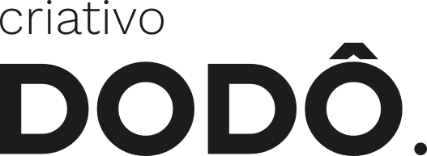
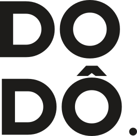
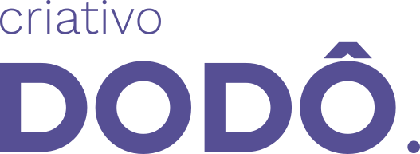
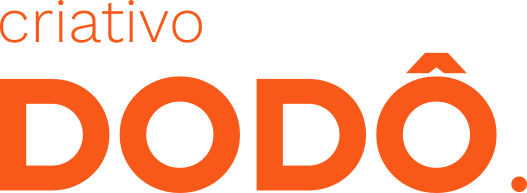

Sistema visual do criativo DODÔ: cores que gritam na medida, tipografia geométrica e regras de aplicação que mantêm tudo reconhecível em qualquer lugar.
O Dodô é criativo antes de tudo. A marca nasce da ideia de um bicho que não deveria mais existir e mesmo assim aparece, com cor, presença e humor. É uma identidade que aposta na ousadia controlada: muita energia, pouca bagunça.
Geométrico e direto. Formas cheias, contraste alto, roxo como base da identidade. Nada de gradiente, textura ruidosa ou ornamento. A força vem da cor e do espaço, não do efeito.
Confiante, brincalhona e criativa. Fala como quem tem repertório e não precisa provar. Leve sem ser infantil, séria sem ser dura.
Direto e curto. Frase afirmativa, verbo na frente, zero jargão. O ponto final do logotipo é o tom da marca: dito e resolvido.
Blocos de cor sólida, muito respiro, tipografia grande como imagem. Roxo domina; amarelo pontua e laranja entra como corte de apoio; preto e off-white organizam. Fotografia (quando houver) recebe overlay de uma das cores da marca para pertencer ao sistema. Composições preferem assimetria e escala, não simetria e moldura.
A assinatura é criativo DODÔ. — “criativo” em caixa baixa e peso leve, “DODÔ.” em bold com o circunflexo sobre o segundo O e o ponto final. Duas versões oficiais: horizontal (leitura completa) e empilhada (usos compactos e ícone de app/avatar).


Ordem de preferência: roxo é o fundo primário da marca; as demais combinações são apoio. Branco sobre roxo (7.1:1 AAA) é a combinação recomendada — mesma versão já usada em produção no frontend.




Reserve, em volta da assinatura, um respiro igual à altura da letra “D” de DODÔ. Nada de texto, borda ou outro elemento dentro dessa margem.
Horizontal: 120px de largura em tela, 24mm em impresso. Empilhada: 40px em tela. Abaixo disso, o circunflexo e o ponto perdem definição.
A paleta não é lista, é receita. A proporção oficial define quanto de cada cor aparece: roxo domina, off-white estrutura, amarelo pontua, laranja aparece como apoio pontual, preto ancora.
Regra de aplicação: em qualquer composição, mantenha a proporção como referência. Se o roxo não é a maior mancha de cor, a peça saiu do sistema. Laranja é apoio — não deve competir em área com o roxo.
Elms Sans para display e títulos (é a fonte do próprio logotipo). Work Sans para texto e interface. Ambas variáveis, geométricas e open-source (licença OFL).
ExtraLight 200 · Medium 500 · ExtraBold 800
Títulos, números grandes, palavras usadas como imagem. Peso 700–800 nos títulos. Letter-spacing levemente negativo.
O sistema respira quando o texto é claro. Corpo em Work Sans Regular, 16px, entrelinha 1.55. Semibold para ênfase, nunca itálico decorativo.
Regular 400 · Medium 500 · SemiBold 600
Linha de 2px, cantos arredondados, construção geométrica e grid de 24px. Mesma lógica das formas do logotipo: cheias por fora, limpas por dentro. Traço na cor preto Dodô; roxo ou laranja só quando o ícone é o próprio destaque.
Layout responsivo, mobile-first. 12 colunas no desktop, 4 no mobile, gutter de 24px e largura máxima de conteúdo de 1120px. Composições de marca podem quebrar o grid de propósito (escala e assimetria); interface, não.
4 · 8 · 12 · 16 · 24 · 32 · 48 · 64 · 96. Sempre múltiplos de 4. Raios: 8 (campos), 14 (cartões), 24 (blocos), pill (botões e badges).
Superfície primária (roxo) para blocos de ação ou dado importante. Título em amarelo, corpo em branco, ação secundária em laranja.
Todo componente interativo declara: padrão, hover, foco, ativo, desabilitado, carregamento e erro. Toda tela declara: carregamento, vazio, sem resultados, erro, sem permissão e (quando aplicável) offline. Cor nunca é o único indicador de estado — sempre acompanha ícone ou texto.
As cores fortes do Dodô não servem para tudo. A tabela abaixo traz as razões de contraste WCAG medidas: use como texto o que passa em AA (4.5:1) ou melhor.
| Combinação | Razão | Uso |
|---|---|---|
| Preto sobre off-white / branco | 14.5:1 – 17:1 | AAA · texto de corpo |
| Preto sobre amarelo | 14.8:1 | AAA · texto sobre destaque |
| Branco sobre roxo | 7.1:1 | AAA · cor primária — CTA e fundo de assinatura |
| Roxo sobre off-white / branco | 6.1:1 | AA · texto, links e ação sobre claro |
| Roxo sobre amarelo | 6.2:1 | AA · título sobre destaque |
| Preto sobre laranja | 5.2:1 | AA · cor secundária — apoio e alerta |
| Branco sobre laranja | 3.3:1 | Só título grande (≥24px) |
| Laranja sobre off-white | 2.8:1 | Não usar como texto de corpo |
| Amarelo sobre off-white / branco | 1.0:1 | Nunca como texto |
Todo elemento navegável por teclado tem foco em roxo com halo (3px). Navegação por teclado é obrigatória.
Mínimo 44×44px para qualquer alvo clicável, com espaçamento entre alvos vizinhos.
Estado nunca depende só de cor. Erro leva ícone e texto; sucesso também. Ícone sozinho recebe rótulo quando o sentido não é óbvio.
Não distorcer ou rotacionar o logotipo. Não trocar as fontes do sistema. Não usar amarelo ou laranja como texto sobre fundo claro. Não empilhar mais de um CTA primário. Não inverter a proporção (roxo precisa ser a maior mancha; laranja nunca domina). Não aplicar sombra pesada, contorno ou textura sobre a assinatura.